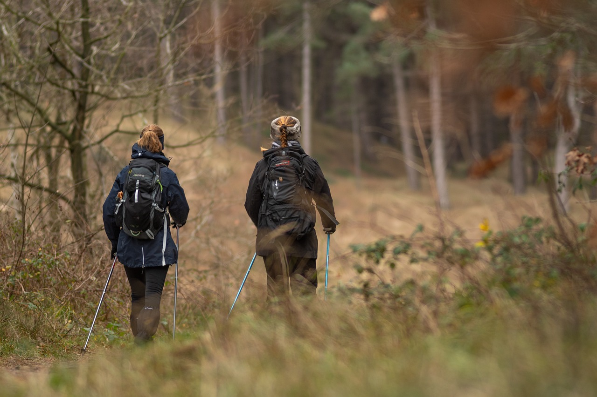

- Természetjárás: A Bükk-vidék számos túraútvonalat kínál, amelyeken keresztül a látogatók megismerhetik a hegység változatos növény- és állatvilágát.
- Kerékpározás: A Bükk-vidék kiválóan alkalmas kerékpározásra is. A hegységben számos kijelölt kerékpárút található, amelyeken keresztül a látogatók felfedezhetik a hegység szépségeit.
- Lovaglás: A Bükk-vidék kiváló hely a lovaglásra is. A hegységben számos lovas létesítmény található, ahol a látogatók megismerkedhetnek a lovaglás alapjaival vagy egyszerűen csak élvezhetik a természetet a hátas lóról.
- Sport: A Bükk-vidék számos lehetőséget kínál a sportolásra is. A hegységben találhatóak sípályák, teniszpályák, golfpályák és egyéb sportlétesítmények.
- Kulturális programok: A Bükk-vidék gazdag kulturális örökséggel rendelkezik. A hegységben számos múzeum, kiállítás és kulturális rendezvény található.
A Bükk-vidék aktivitásai minden korosztály számára kínálnak lehetőségeket a kikapcsolódásra és a felfedezésre. A hegységben mindenki megtalálhatja a számára megfelelő programot.
A Bükk-vidék Magyarország egyik legnépszerűbb turisztikai célpontja. A hegység gazdag természeti és kulturális értékekkel rendelkezik, amelyek számos lehetőséget kínálnak a kikapcsolódásra és a felfedezésre.
Regisztráció Programainkra:
